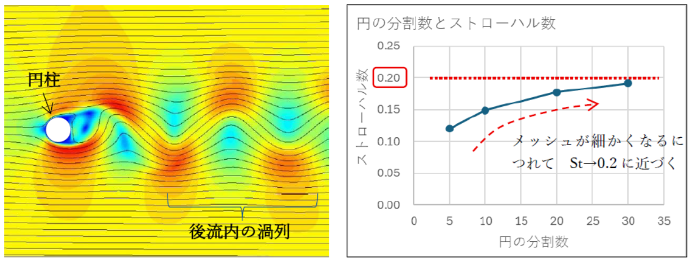
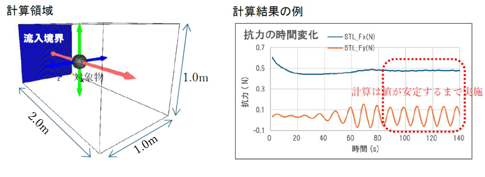
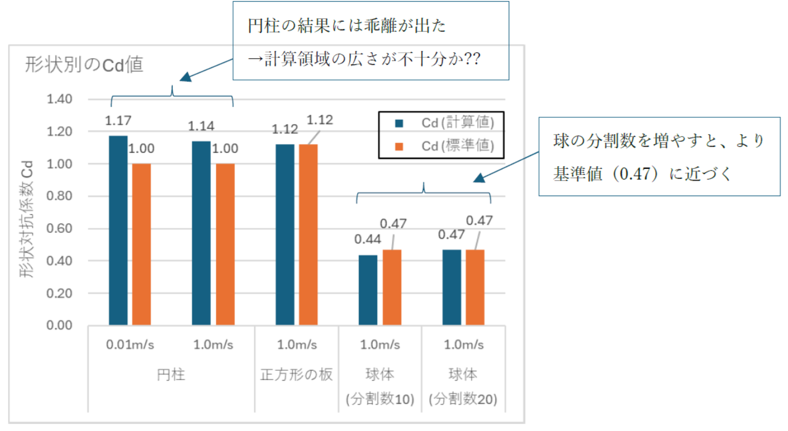
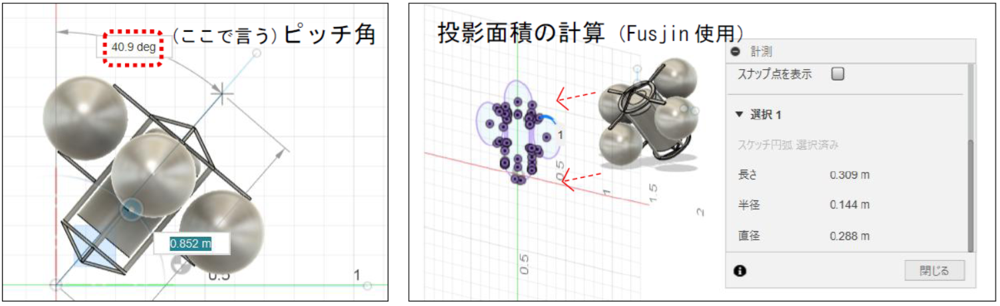
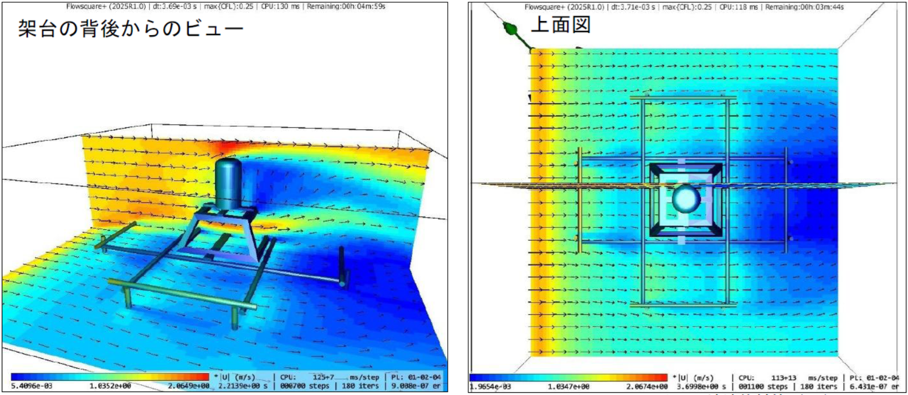

検証概要
本報告では、流体解析ソフト FlowSquare+ の使用方法確認を兼ねた動作テストを実施した。流体計算ツールの標準的な検証手順として、円柱周りの流れの再現性（ストローハル数）および基本形状に対する形状抵抗係数（Cd）の確認を行った。
実用例として、中層係留観測で用いられる典型的な係留ブイ（耐圧ブイ×4個）が流れから受ける力の推定、および海底設置式ADCP架台周りの流速分布の可視化を実施した。
使用する基本概念
流体の慣性力と粘性力の比を表す指標。流れが乱流寄りか層流寄りかの目安となる。
円柱後流に発生するカルマン渦列の渦放出周期を無次元化した値。Re=40$301C3×10$2075の範囲で St $2248 0.2 となることが知られている。
物体が流体から受ける力を示す無次元指標。流速・対象物サイズの影響を除外し、形状のみの影響を抽出した値。円柱・球・正方形など基本形状には標準値が定義されており、計算結果の妥当性評価に用いる。
円柱周りのストローハル数検証（2次元）
円柱後流のカルマン渦列を再現し、ストローハル数が理論値（0.20）に近づくかをメッシュ分割数を変えて検証した。
円柱 L=1.0m、D=0.1m ／ 計算領域 X=2.0m × Y=1.0m ／ 流速 1.0m/s（Re$22481.03×10$2075） ／ 分割数 5・10・20・30 の4パターン

| 領域分割数 | 直径分割数 | 流速 (m/s) | Re | ストローハル数 St | 理論値との差 |
|---|---|---|---|---|---|
| 50×100 | 5 | 1.0 | 1.03×10$2075 | 0.12 | $221240% |
| 100×200 | 10 | 1.0 | 1.03×10$2075 | 0.15 | $221225% |
| 200×400 | 20 | 1.0 | 1.03×10$2075 | 0.18 | $221210% |
| 300×600 | 30 | 1.0 | 1.03×10$2075 | 0.19 | $22125% |
円周周りの流れを適切に再現するには、少なくとも円の直径を 20$301C30分割 するメッシュが必要。分割数30で St=0.19 となり、理論値0.20に対して5%以内に収まる。
形状抵抗係数の検証（3次元）
球体・正方形板・円柱の3形状について形状抵抗係数を計算し、標準値と比較した。
計算領域 X=2.0m × Y=1.0m × Z=1.0m ／ 流速 1.0m/s（一部 0.01m/s） ／ 物体背面の流速が安定したところで終了


| 形状 | 流速 (m/s) | 分割数 | 投影面積 (m$00B2) | Re | 水平抗力 Fx (N) | 計算Cd | 標準Cd |
|---|---|---|---|---|---|---|---|
| 円柱（D=0.1m） | 0.01 | 17 | 0.10 | 1.03×10$00B3 | 6.01×10$207B$00B3 | 1.17 | $22481.0$301C1.2 |
| 円柱（D=0.1m） | 1.0 | 17 | 0.10 | 1.03×10$2075 | 58.3 | 1.14 | $22481.0$301C1.2 |
| 正方形板（0.2×0.2m） | 1.0 | 20 | 0.04 | 2.05×10$2075 | 22.9 | 1.12 | 1.12 |
| 球体（D=0.1m） | 1.0 | 10 | 0.00785 | 1.03×10$2076 | 1.76 | 0.44 | 0.47 |
| 球体（D=0.1m） | 1.0 | 20 | 0.00785 | 1.03×10$2076 | 1.88 | 0.47 | 0.47 |
円柱の結果（Cd=1.14$301C1.17）は標準値と若干の乖離がある。計算領域の広さが不十分な可能性が考えられる。球体は分割数を20に増やすことで標準値（0.47）に一致した。
ADCP用中層係留ブイの抗力推定
中層係留観測で用いる標準的な係留ブイ（10Bブイ×4個使用）を対象に、流速とピッチ角（傾斜）を変えた2ケースの流体計算を実施した。計算領域は高さ1.5m × 幅2.0m × 長さ2.5m（メッシュサイズ2cm）。

ケース① ピッチ角の影響（流速1.5m/s固定）
ピッチ角が大きくなるにつれて流れに晒される投影面積が増大し、水平抗力も増大する。形状抵抗係数Cdは0.61$301C0.69の範囲で変化。
| ピッチ角 (°) | 水平抗力 Fx (N) | 投影面積 (m$00B2) | 抵抗係数 Cd |
|---|---|---|---|
| 0° | 186 | 0.262 | 0.62 |
| 10° | 194 | 0.277 | 0.61 |
| 20° | 226 | 0.286 | 0.68 |
| 40° | 248 | 0.310 | 0.69 |
| 60° | 267 | 0.337 | 0.69 |
ケース② 流速の影響（ピッチ角0°固定）
水平抗力は流速の2乗に比例して急増する。一方、形状抵抗係数Cdはほぼ一定（0.59$301C0.62）。
| 流速 (m/s) | 水平抗力 Fx (N) | 抵抗係数 Cd | 備考 |
|---|---|---|---|
| 0.5 | 19.7 | 0.59 | |
| 1.0 | 77.8 | 0.58 | |
| 1.5 | 186 | 0.62 | |
| 2.0 | 334 | 0.62 | $22484倍（流速2倍） |
実用的な限界流速の推定
ADCPで正常な流速データを取得するには、ブイの傾斜（ピッチ角）を10°以内に保つことが望ましい。耐圧ブイ4個の余剰浮力を40kgと仮定し、以下の式で限界流速を推定した。
余剰浮力40kg（392N）、Cd=0.61、A=0.277m$00B2を用いると、ピッチ角を10°に納めるための限界流速は 約0.9m/s（約1.6ノット） と推定される。
海底設置式ADCP架台周りの流速分布
R05年度北海道タイプのADCP架台を対象に、周辺の流速分布を可視化した。砂の堆積しやすい場所の目安や、架台全体にかかる流体力の把握に活用できる。
流速 1.5m/s ／ 計算領域 高さ1.0m × 幅3.0m × 長さ3.0m ／ メッシュサイズ 3cm（50×100×100） ／ 計算時間 約15分

まとめ・評価
FlowSquare+では、本来複雑な設定を必要とする流体計算を、比較的少ない準備作業で実施できる。一般ユーザー向けの仕様であるため、業務用ソフト（OpenFOAM等）と比較すると制約はあるが、以下のような用途への活用が考えられる。
- 海底設置物・浮体にかかる流体力の大まかな見積り
- 流れの滞留箇所・砂の堆積しやすい場所の検討
- 大規模計算を専門業者に依頼する前の方針検討
- 計算前の準備作業が比較的少ない
- 計算後のグラフ出力が標準機能に含まれる
- タイムステップΔtの検討が不要（自動最適化）
- 矩形メッシュのため対象物周りの細かい流れは苦手
- GUIのみ対応・バッチ処理は不可
- OpenFOAM等に比べて出来ることに制約あり
領域サイズ・メッシュサイズの最適化にはトライ&エラーが避けられない。また、対象物は3D-CADでSTL形式での作成が必須であり、モデルの品質管理に一定の習熟が必要。販売元（㈱Nora Scientific）では個別カスタマイズ・技術相談にも対応可能（別途有償）。